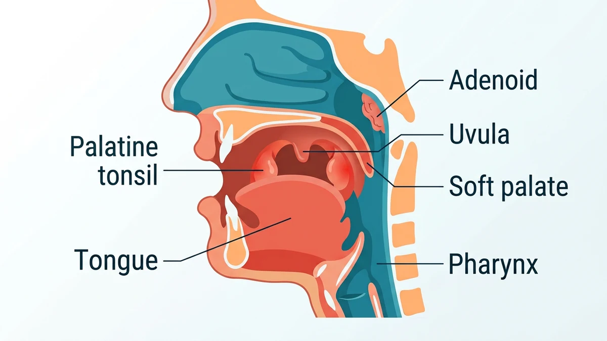
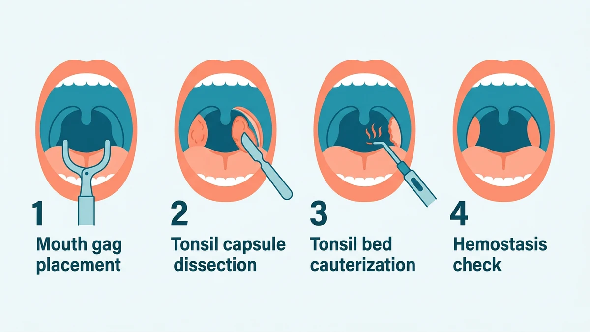

تانسیلکتومی جراحی برداشتن کامل دو لوزهٔ کامی است که در دو طرف انتهای دهان قرار دارند و یکی از رایجترین جراحیهای گوش و حلق و بینی، بهویژه در کودکان، به شمار میرود. این عمل معمولاً با بیهوشی عمومی و کاملاً از راه دهان انجام میشود، یعنی هیچ برشی روی پوست گردن ایجاد نمیشود و بیشتر بیماران همان روز یا یک روز بعد به خانه برمیگردند.
والدین معمولاً با دو نگرانی همزمان به این جراحی میرسند: هم نگران تکرار عفونتهای لوزهٔ فرزندشان هستند و هم ترس از بیهوشی و خونریزی دارند. در این راهنما مسیر کامل تانسیلکتومی را از چرایی انجام تا مراحل اتاق عمل و عوارض احتمالی باز میکنیم. آمادگیهای پیش از عمل در مقالهٔ آمادگی قبل از جراحی لوزه و مراقبتهای پس از ترخیص در مراقبتهای بعد از جراحی لوزه توضیح داده شده است.
لوزههای کامی دو توده بافت ایمنی در دو طرف گلو هستند که در سالهای نخست کودکی بزرگترند و با افزایش سن معمولاً کوچک میشوند. وقتی همین بافت خودش به منبع عفونت مکرر تبدیل شود یا راه هوایی را تنگ کند، برداشتن آن منطقیتر از نگهداشتنش میشود. جایگاه دقیق لوزه و ساختارهای اطراف در شکل زیر نشان داده شده است.

متخصص گوش و حلق و بینی بر اساس دفعات واقعی عفونت، شدت علائم و تأثیر بر زندگی روزمره تصمیم میگیرد. شایعترین نشانهها عبارتاند از:
این عمل تقریباً همیشه با بیهوشی عمومی انجام میشود، چون بیمار باید در طول عمل کاملاً بیحرکت باشد و این همکاری در کودکان ممکن نیست. فرایند بیهوشی عمومی در مقالهٔ بیهوشی عمومی چگونه است شرح داده شده و نکتههای ویژهٔ بیماران کمسنوسال در راهنمای کودکان و بیهوشی آمده است. متخصص بیهوشی کودک را پیش از عمل ویزیت میکند، داروها را بر اساس وزن تنظیم میکند و در تمام لحظات عمل تنفس و علائم حیاتی را پایش میکند.
دو خانوادهٔ اصلی روش وجود دارد؛ انتخاب نهایی به تجربهٔ جراح و شرایط بیمار بستگی دارد و هر دو استانداردند.
| روش | چگونه انجام میشود | نکته |
|---|---|---|
| جداسازی کلاسیک | لوزه با ابزار جراحی از بستر خود جدا و خونریزی با بخیه یا کوتر کنترل میشود | روش دیرپا و شناختهشده با سابقهٔ طولانی |
| روشهای انرژیمحور | جداسازی با انرژی حرارتی یا امواج که همزمان بافت را میبرد و منعقد میکند | خونریزی حین عمل کمتر؛ الگوی درد پس از عمل مشابه |
روال معمول عمل در چهار گام اصلی دنبال میشود:

بیمار در اتاق ریکاوری بیدار میشود و تنفس، فشار خون و علائم خونریزی پایش میگردد. گلودرد، تهوع خفیف و گوشدرد ارجاعی در این مرحله شایع است. بسیاری از مراکز موارد انتخابی را به صورت سرپایی ترخیص میکنند، اما کودکان کمسن یا بیماران با بیماری همراه ممکن است یک شب بستری بمانند. هنگام ترخیص، برنامهٔ مسکن، رژیم غذایی و نشانههای هشدار به صورت برگهٔ مکتوب تحویل داده میشود.
این جراحی رایج و ایمن است، اما مانند هر عمل دیگری عوارضی دارد. مهمترین آن خونریزی است که میتواند در ساعات نخست یا در دورهٔ ترمیم هنگام افتادن لایهٔ سفید زخم رخ دهد. کمآبی بهدلیل نخوردن مایع، عفونت و تغییر گذرای صدا از موارد کمتر شایعاند.
⚠️ در صورت دیدن خون روشن در بزاق، استفراغ خونی، بلع مکرر بزاق خونی، خونریزی فعال از دهان، تب بالا، ناتوانی در نوشیدن و کاهش شدید دفع ادرار، تنگی نفس یا خوابآلودگی غیرعادی فوراً به مرکز درمانی برگردید یا با ۱۱۵ اورژانس را خبر کنید. سایر نشانههای جدی پس از جراحی در صفحهٔ علائم خطر بعد از عمل توضیح داده شدهاند.
تانسیلکتومی جراحی برداشتن کامل دو لوزه کامی در دو طرف انتهای دهان است و یکی از رایجترین جراحیهای گوش و حلق و بینی، بهویژه در کودکان، به شمار میرود. این عمل معمولاً با بیهوشی عمومی و از راه دهان و بدون برش روی پوست گردن انجام میشود.
شایعترین دلیل، عفونتهای مکرر لوزه است که زندگی روزمره را مختل کرده باشند. بزرگ بودن لوزه همراه خروپف و وقفه تنفسی خواب، آبسه دور لوزه و برخی بیماریهای خاص دیگر هم از نشانههای جراحیاند. تصمیم نهایی با متخصص گوش و حلق و بینی و بر اساس دفعات واقعی عفونت و علائم بیمار است.
تقریباً همیشه با بیهوشی عمومی انجام میشود، بهویژه در کودکان، چون بیمار باید بیحرکت باشد و همکاری کودک در اتاق عمل ممکن نیست. متخصص بیهوشی کودک پیش از عمل ویزیت میکند و روش بیهوشی و داروی مسکن را بر اساس وزن و سلامت کودک تنظیم میکند.
در روش کلاسیک لوزه با ابزار جراحی از بستر خود جدا و خونریزی کنترل میشود؛ روشهای جدیدتر از انرژی حرارتی یا امواج برای جداسازی همزمان با انعقاد استفاده میکنند. انتخاب روش به تجربه جراح و وضعیت بیمار بستگی دارد و هر دو روش استاندارد و رایجاند.
گلودرد پس از این عمل طبیعی است و معمولاً در روزهای نخست و دوباره در اوایل هفتهٔ دوم هنگام افتادن لایه ترمیمی زخم شدیدتر حس میشود؛ گوشدرد ارجاعی هم شایع است. نوشیدن مایع کافی و غذای سرد و نرم به تحمل این دوره کمک میکند و درد بهتدریج فروکش میکند.
خونریزی مهمترین عارضه است که میتواند بلافاصله پس از عمل یا در دورهٔ ترمیم هنگام جدا شدن لایهٔ سفید زخم رخ دهد. دیدن خون روشن، استفراغ خونی یا بلع مکرر بزاق خونی غیرطبیعی است و باید فوراً به مرکز درمانی مراجعه کرد. عفونت، کمآبی و مشکلات گذرای صدا از عوارض کمتر شایعاند.
دستور پزشک و پروتکل مرکز درمانی شما بر هر متن عمومی مقدم است.
این مقاله صرفاً جنبهی آموزش و اطلاعرسانی دارد و جایگزین تشخیص، مشاوره یا درمان پزشکی نیست.